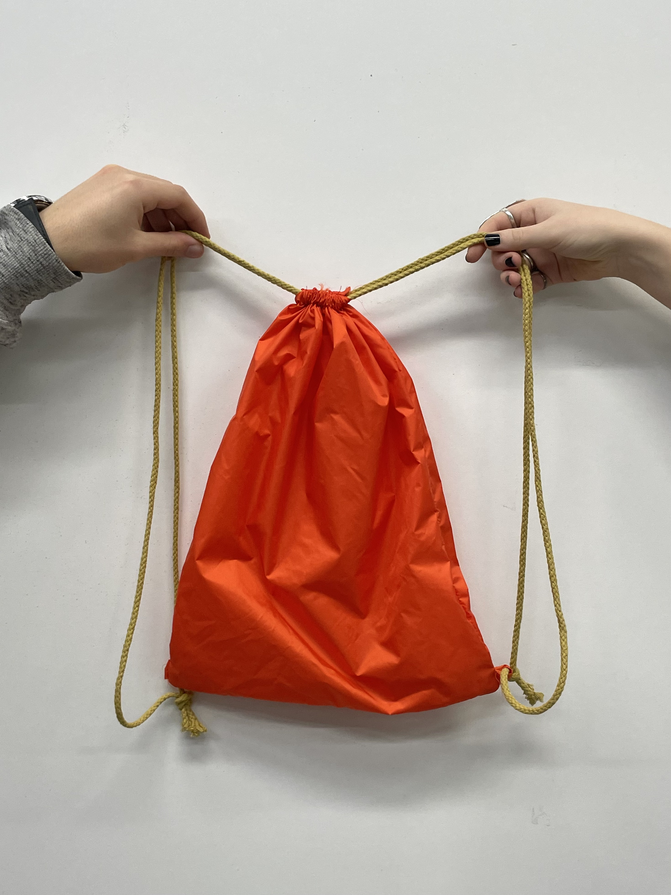
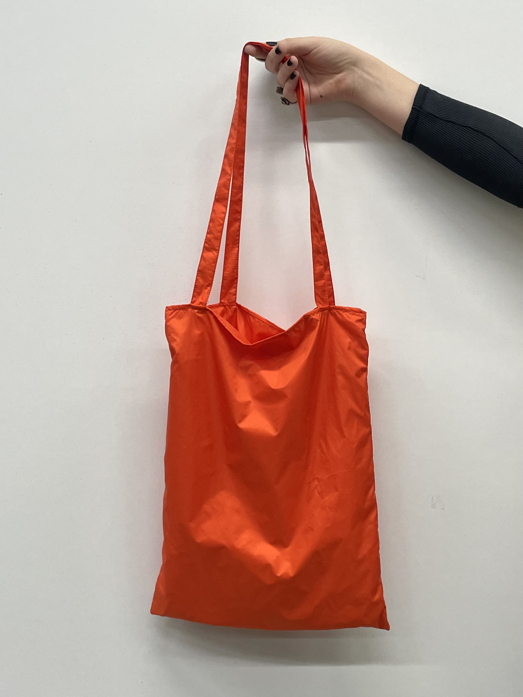
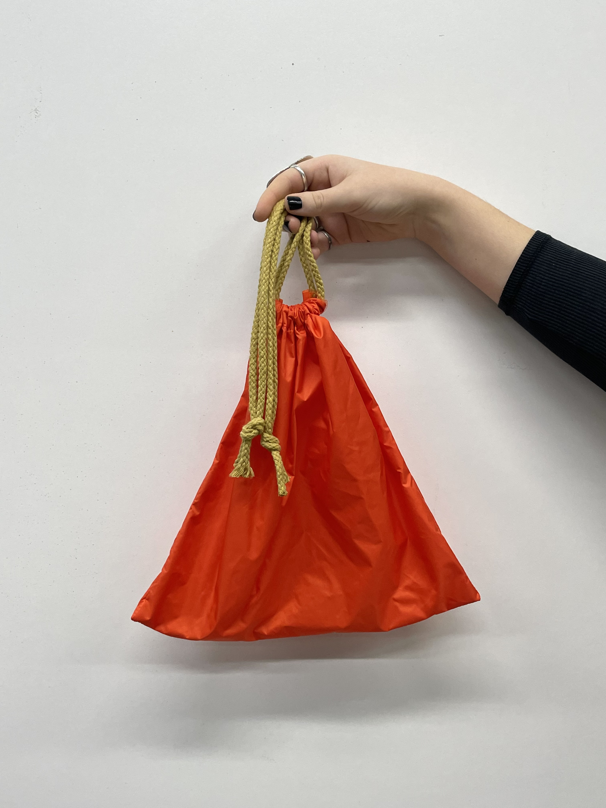

Productos

Bintje
6.00€
El modelo Bintje consiste en una mochila confeccionada con el tejido a base de nuestras patatas. Tiene dos cuerdas para que sea ajustable.

Vitelotte
5.00€
El modelo Vitelotte consiste en una tote bag con el logo de POTEKO.

Draga
0.10€
El modelo Draga consiste en una bolsa biodegradable de supermercado.

Elodie
4.00€
El modelo Elodie consiste en un saco con cierre ajustable hecho con tejido prom.

Kennebec
6.00€
El modelo Kennebec consiste en un saco de rejilla a base del tejido proveniente de nuestras patatas.